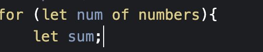
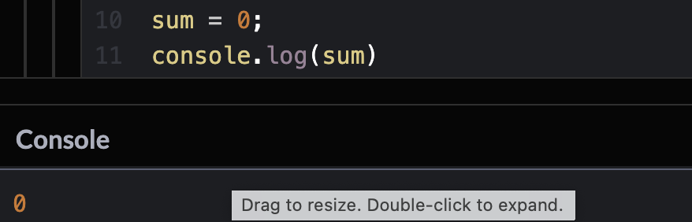
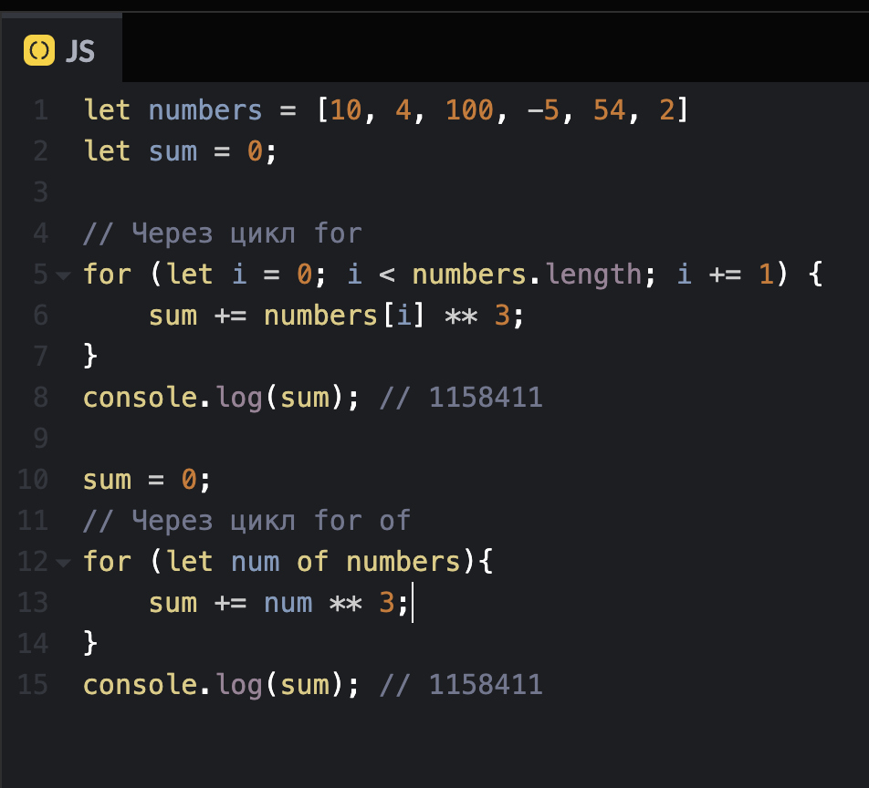

code review
Ошибки в четвертом коде:
1.Честно, я эту задачу не особо понял

2.Но когда создаешь переменную внутри второго цикла - все работает
3.Хотя через консоль после первого цикла переменная без проблем обнуляется
4.Код с исправлениями
Ссылка на codepen